Nos metemos en el proyecto desde el inicio para que concepto, producción y entrega hablen el mismo idioma.
Conoce nuestros serviciosProducciones en vivo, contenidos y experiencias que siguen hablando mucho después de que baja el telón.
Concepto, tono y universo visual para darle una voz propia a tu idea.
Del evento corporativo al show de gran formato, cuidamos cada etapa.

Escena, visuales y cobertura para que el momento se sienta completo.
Convertimos lo que sucede en piezas que siguen conectando después.
Escuchamos qué quieres provocar y para quién tiene que suceder.
Construimos la idea, el lenguaje y la experiencia que la vuelve memorable.
Coordinamos personas, escena y contenido para que todo ocurra con claridad.
Cuéntanos qué quieres crear y armemos juntos la producción que tu público va a recordar.
Escríbenos